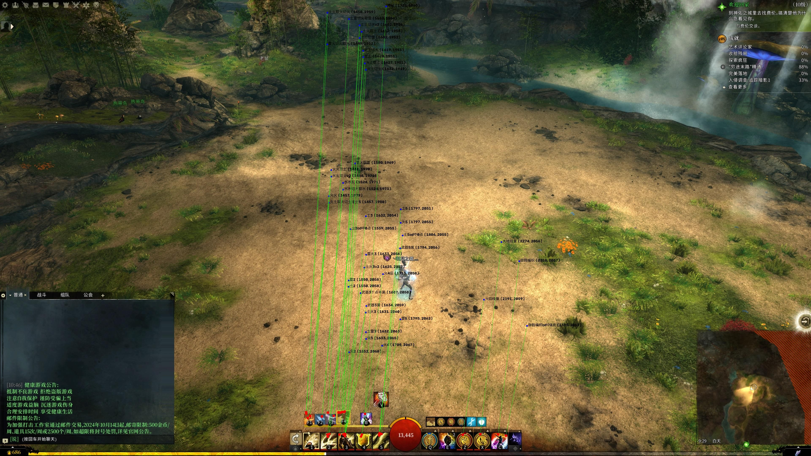

症状编织-枪号-新手慎入
火5，火5=1=火土取火切土接土5，火土取火切土接土5=1=自我编织|土5，火5，土5cd中0点=土2cd中0点=自我编织，自我编织=1=武器3十点半黑=土土=土土切火，自我编织>>60000=武器3十点半黑=土土=土土切雷，雷2，土雷3，土雷切火取雷，雷5，雷火取雷=雷火切火取火，自我编织cd中2点=揭秘=武器3十点半黑=土土=土土切水v2，水水切火取水，土3=1=武器3十点半黑=土土=土土切火，火土取土=火4=土火3v2，土火3，土火取土=火4反=土火取火切火，火3，火2，雷火3，水水切火取水=1=火4=火火=火火切土v2，火4=火火=火火切土，土火3=1=火土取土=火土切土，武器3十点半黑=火土取土=火土切土，水水反=火焰纹章，火土取火切土接土5>100=武器5黑=土2，土3，土5=1=土2，武器5黑=土2，火焰纹章>1000=武器3黑=水水反=大地纹章||
火5,5,741|火土取火切土接土5,f4,150,5,791|自我编织,c,800,,,,,,,,,,,,,,,,,触发,0,,0,,,72000|土5,5,791|土5cd中0点|土2cd中0点|武器3十点半黑|土土|土土切火,f1,150,e,5,3,481,2,521|土土切雷,f3,150,2,442,3,558|雷2,2,442|土雷3,3,558|土雷切火取雷,f1,150,5,444,2,521,3,642|雷5,5,444|雷火取雷|雷火切火取火,f1,150,3,680|自我编织cd中2点|揭秘,b,5|土土切水v2,f2,150,3,500,2,600,b,400,,,,,,,,,,,触发,0,,1|水水切火取水,3,220,f1,100,f1,200,,,,,,,,,,,,,触发,0,,1|土3,3,439|火土取土|火4|土火3v2,3,150,f4,331,3,439|土火3,3,481|土火取土,,,,,,,,,,,,,,,,,,,触发,0,,0,,10|火4反,,,,,,,,,ifnot|土火取火切火,f1,150,3,680|火3,3,680|火2,2,521|雷火3,3,642|火火,,,,,,,,,,,,,,,,,,,触发,0,,0,,10|火火切土v2,f4,150,1,660,1,660,1,660,,,,,,,,,,,触发,0,,0,1,15|火火切土,f4,150,e,5,2,521,,,,,,,,,,,,,触发,0,,0,,15|火土切土,f4,150,3,100,3,100,3,239|水水反,,,,,,,,,ifnot|火焰纹章,z,521|武器5黑|土2,2,521|武器3黑|大地纹章,x,521
[&DQYfJRomOBV0AAAANRcAAMsAAACRAAAAEhcAAAAAAAAAAAAAAAAAAAAAAAADNgBnAFYAAA==]
火切到土 土子弹 起手
解释一下，火土是指，火切到土并且cd完毕，对应武器是右边火左边土，其他同理。因为有时候协调的图案会错位，可以参考其他帖子的解释，所以发现切不了了就多取几个版本。
键位 F1 F2 F3 F4 B || 1 2 3 4 5 || Q E Z X C
软件版本 v1.78
视频参考
https://www.bilibili.com/video/BV1SP8x6hEKA/?share_source=copy_web&vd_source=bea77f628363ec88c2baa85d91932616
取色参考

评论列表（20）
不切水和雷啥情况？
手枪比之前的节杖高多少？还在用之前的节杖版本，这个手枪版的看着好复杂
你们0点怎么取的？ 是黑色吗
@飞飞 8分白2分黑。左边是黑右边是白
@飞飞 名称不带“黑”字的就不要取黑色。另外要注意cd时转圈的那条线上会有模糊效果，也不要取。
土2一段和土2二段 不能取色不能分开
大佬，水反怎么取色
大佬弄个敏唤元，爱你么么哒(づ￣ 3￣)づ
@桑桑芒 这个职业容易乱循环，而且需要用插件监控子弹和元素平衡，才能打得高。
要注意调全局延迟的，我是0.85。然后今天针对协调取色又优化了一版，我试了一下，一遍就成功了，只需要按照文字描述，调整好协调后在对应协调图标中间随便找个点取就行。
火5，火5=1=火土取火切土接土5，火土取火切土接土5=1=自我编织|土5，火5，土5cd中0点=土2cd中0点=自我编织，自我编织=1=武器3十点半黑=土土取土切火，自我编织>>60000=武器3十点半黑=土土取土切雷，雷2，土雷3，土雷取雷切火，雷5，自我编织cd中2点=揭秘=武器3十点半黑=土土取土切水，水水取水切火，土3=1=武器3十点半黑=土土取土切火，火土取火切土=土火3v2，土火3，火4反=火火取火，火3，火2，雷火3，水水取水切火=1=火4=火火取火切土v2，火4=火火取火切土，土火3=1=火土取火切土，武器3十点半黑=火土取火切土，水水取水反=火焰纹章，火土取火切土接土5>100=武器5黑=土2，土3，土5=1=土2，武器5黑=土2，火焰纹章>1000=武器3黑=水水取水反=大地纹章||
火5,5,741|火土取火切土接土5,f4,150,5,791|自我编织,c,800,,,,,,,,,,,,,,,,,触发,0,,0,,,72000|土5,5,791|土5cd中0点|土2cd中0点|武器3十点半黑|土土取土切火,f1,150,e,5,3,481,2,521|土土取土切雷,f3,150,2,442,3,558|雷2,2,442|土雷3,3,558|土雷取雷切火,f1,150,5,444,2,521,3,642|雷5,5,444|自我编织cd中2点|揭秘,b,5|土土取土切水,f2,150,3,500,2,600,b,400,,,,,,,,,,,触发,0,,1|水水取水切火,3,220,f1,100,f1,200,,,,,,,,,,,,,触发,0,,1|土3,3,439|火土取火切土,f4,150,3,100,3,100,3,239|土火3v2,3,150,f4,331,3,439|土火3,3,481|火4反,,,,,,,,,ifnot|火火取火,f1,150,3,680|火3,3,680|火2,2,521|雷火3,3,642|火4|火火取火切土v2,f4,150,1,660,1,660,1,660,,,,,,,,,,,触发,0,,0,1|火火取火切土,f4,150,e,5,2,521|
@优雅之殇 导入没有按键延迟信息，格式不对额
@默 521后面这个竖线不能复制才行..
@优雅之殇 没有按键啥的，取色描述啥的根本看不懂。。太难了
大佬 ,那个线我都看力竭了,能改一下线的颜色么,我晚了班戈小时连连看还是不对
@圣光 哪里不对，描述下现象。最好把日志功能勾上，看看日志最后几行。
@不是大佬 是他那个取色图片
@圣光 那只是参考，按文字描述来取就行
大佬,这个图片看不清啊
我将准备研究一年
牛逼，这个应该是除了幻象术士外最难做的了